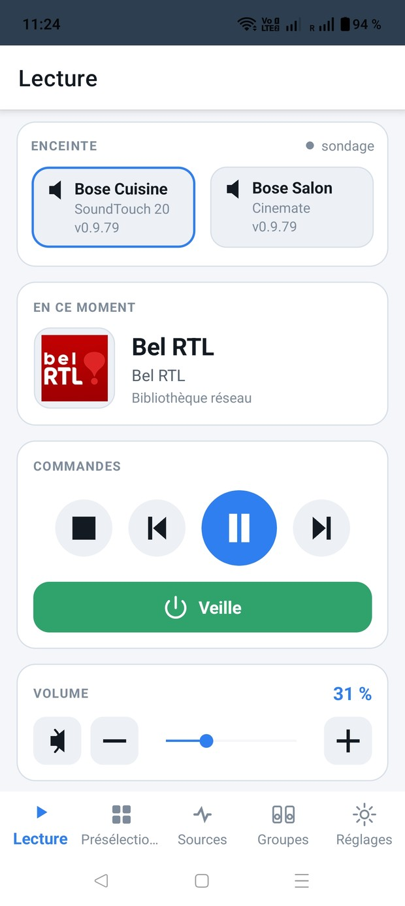
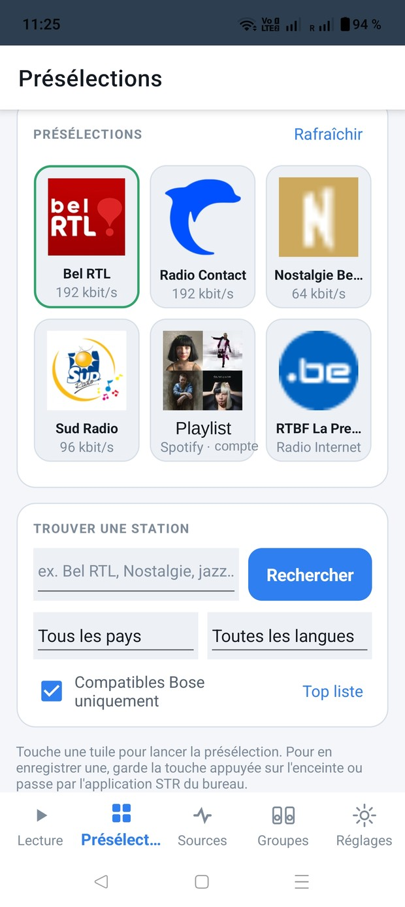
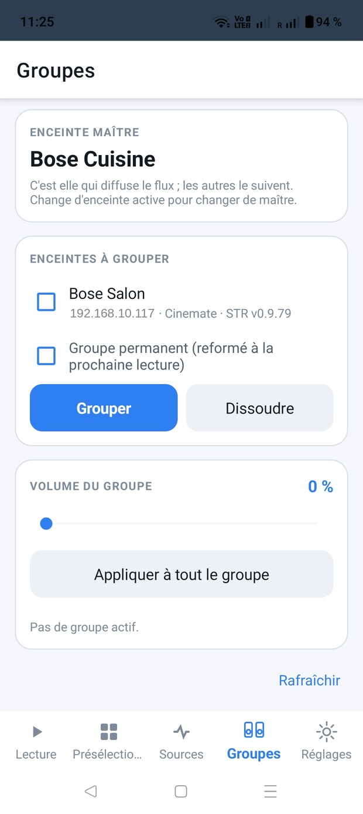
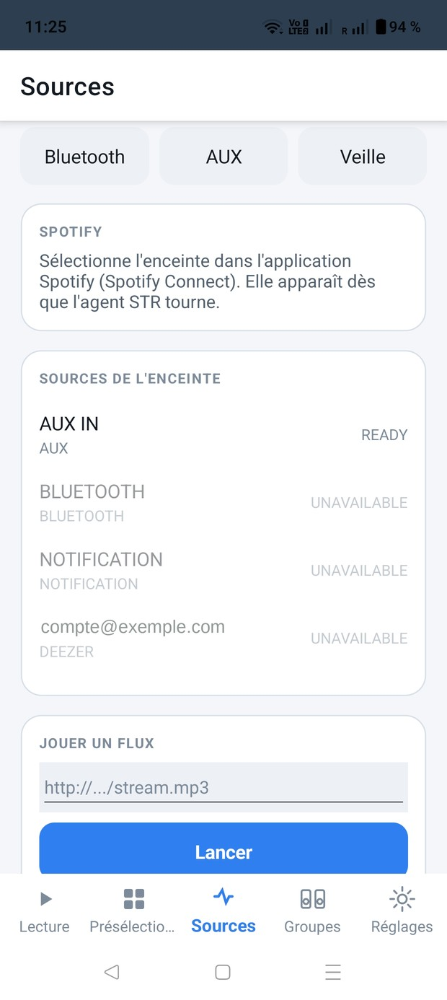
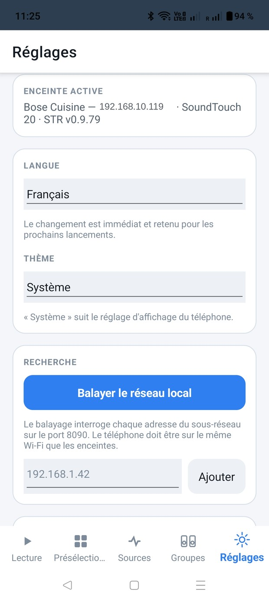

The STR agent must be on the speaker. It is what gives SoundTouch
speakers back what the Bose cloud provided until it shut down on 6 May 2026. You install
it with the STR tool for PC or Mac — st-reborn.de.
This application does not install it; it flags the speakers that do not have it.





User manual
Installation, screen by screen, gestures, troubleshooting and known limits.
PDF versions are attached to each release.
Internet station search, and assigning a station to a key
Speaker sources, Bluetooth, AUX, playing an arbitrary stream
Multi-room groups: whole-group volume, per-speaker volume, levelling in one key
Commands follow the group's master, because the master is what plays
Speaker discovery over mDNS, falling back to a network sweep
Interface in English, French, German, Dutch and Spanish, light or dark theme
Thanks to STR
When Bose shut down its cloud, SoundTouch speakers lost most of what made them useful.
STR — SoundTouch Reborn, by Jens Roggenfelder
(JRpersonal), is the agent that runs
on the speaker itself and gives back what the cloud provided. This application does
nothing more than talk to it: without his work it would have nothing to control.